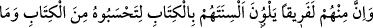
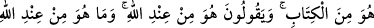
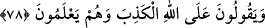

tahrif edip Hz. Muhammed’in sıfatlarını değişik gösteren ve bunun karşılığında rüşvet
alan yahûdîler hakkında nâzil olmuştur.
78. Ehl-i kitaptan bir grup, okuduklarını kitaptan sanasınız diye kitabı okurken
dillerini eğip bükerler. Halbuki okudukları Kitap’tan değildir. Söyledikleri Allah
katından olmadığı halde: Bu Allah katındandır, derler. Onlar, bile bile Allah’a iftirâ
ediyorlar.
Tahrifçi yahûdîlerden Kâb b. el-Eşref, Mâlik b. es-Sayf ve bunlar gibi bir grup vardır
ki dillerini kitapla eğip bükerler. Yani kitabın okunuşunu eğip bükerler ve onu münzel
bir kitap derecesinden muharref bir kitap derekesine indirirler. Bu tahrifi de muharref
şeyi, Kitap’tan bir parça sanasınız diye yaparlar. Halbuki bu eğip büktükleri, hem
gerçekten hem de kendi inançlarına göre Kitap’tan değildir. Eğip büktükleri ve tahrif
ettikleri zikredilmesine rağmen, târiz yolu ile değil, açıkça bu “Allah katından
indirilmiştir” derler. Halbuki bu muharref kitap, yine kendi inançlarına göre Allah
katından değildir. Yalan söylediklerini ve Allah’a iftirâ ettiklerini bile bile Allah’a
karşı yalan söylerler. Bu, onların kasden Allah’a iftirâ ettiklerini tescil ve te’kid
etmektedir.
İbn Abbas (r.a.)’dan mervîdir ki bunlar; Kâ’b b. el-Eşref’e gelip Tevrât’ı değiştiren;
Hz. Peygamber (s.a.)’in sıfatında değişiklik yapan yahûdîlerdir. Daha sonra Kurayza
oğulları, bunların yazdığını alıp Kitab’a karıştırmışlardır.
Misak Günü, tevhid ve vahdeti isteme konusunda Allah’a söz verip, O’na verdikleri
sözü ve o gün ettikleri yeminleri, sadece beş duyu organını ve nefsânî özellikleri
doyuran dünyâ metâından, dünyâ zînetinden az bir para karşılığında satanlar var ya; işte
bunların ruhânî ve rabbânî ahlâk esintilerinden hiçbir nasipleri yoktur. Allah kıyâmette;
anlatma, Zatına yaklaştırma ve ikrâm etme mânasında bunlarla konuşmaz ve onlara
inâyet ve rahmet nazarıyla bakmaz. Cehennem derekelerine girmelerine sebep olan
sıfatlardan arındırmayarak onlara rahmet etmez; ilelebed cehennem odunu olacak kötü
sıfatlarından kurtarmaz. Allah onlarla konuşmayacağı, onlara bakmayacağı ve onları
tezkiye etmeyeceği için acı bir azap çekmiş olurlar.
Ehl-i mârifet olduklarını iddiâ edenlerden bir grup vardır ki kullandıkları kelimeleri
Kitap’tan mârifetten sanasınız diye ağızlarını Kitap’la yani ehl-i mârifetin kelimeleri ile
eğip bükerler. Halbuki bu kelimeler, Allah’ın, âriflerin kalbine yazdığı Kitap’tan
değildir. Bunlar, Allah’ın katından olmadığı halde, “Allah’tandır” yani ilm-i
ledünnîdendir, derler. Böyle mânasız iddialarda bulunarak yapmayacakları şeyi